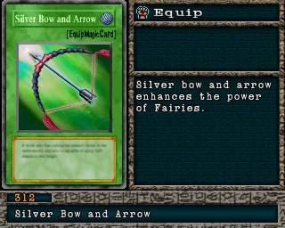

#312 · Equipamento
Silver Bow and Arrow
CategoriaEquipamento
Senha1557499
Star Chips800
Quem dropa no Mod 13
| Duelista | Rank | Chance | Média | |
|---|---|---|---|---|
| S/A-TEC | 1,76% 36/2048 | 1 em 57 duelos | ||
| S/A-TEC | 1,56% 32/2048 | 1 em 64 duelos | ||
| S/A-TEC | 1,56% 32/2048 | 1 em 64 duelos | ||
| S/A-TEC | 1,37% 28/2048 | 1 em 73 duelos | ||
| B/C/D | 1,27% 26/2048 | 1 em 79 duelos | ||
| S/A-TEC | 0,88% 18/2048 | 1 em 114 duelos | ||
| S/A-TEC | 0,88% 18/2048 | 1 em 114 duelos | ||
| S/A-TEC | 0,78% 16/2048 | 1 em 128 duelos | ||
| S/A-TEC | 0,73% 15/2048 | 1 em 137 duelos |
Quem dropa no jogo original
| Duelista | Rank | Chance | Média | |
|---|---|---|---|---|
| S/A-TEC | 1,76% 36/2048 | 1 em 57 duelos | ||
| S/A-TEC | 1,56% 32/2048 | 1 em 64 duelos | ||
| S/A-TEC | 1,56% 32/2048 | 1 em 64 duelos | ||
| S/A-TEC | 1,37% 28/2048 | 1 em 73 duelos | ||
| B/C/D | 1,27% 26/2048 | 1 em 79 duelos | ||
| S/A-TEC | 0,88% 18/2048 | 1 em 114 duelos | ||
| S/A-TEC | 0,88% 18/2048 | 1 em 114 duelos | ||
| S/A-TEC | 0,78% 16/2048 | 1 em 128 duelos | ||
| S/A-TEC | 0,73% 15/2048 | 1 em 137 duelos |
A chance vale por duelo vencido com o rank indicado. "1 em N" é a média de duelos para conseguir a carta. S/A-POW = vitória por força; S/A-TEC = vitória técnica; B/C/D = ranks baixos.